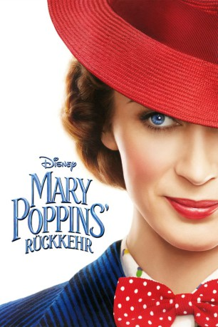
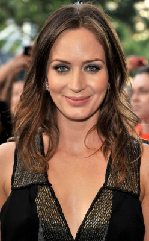
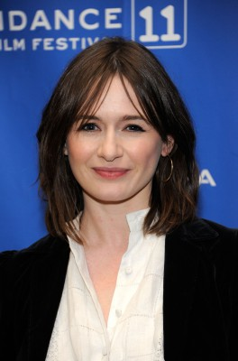
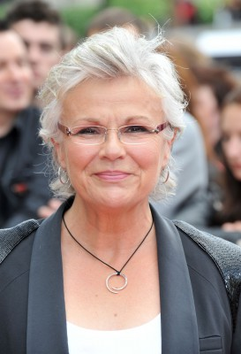
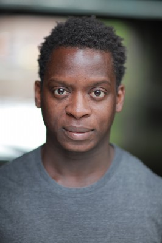
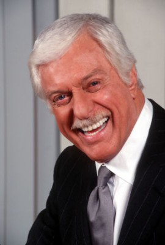
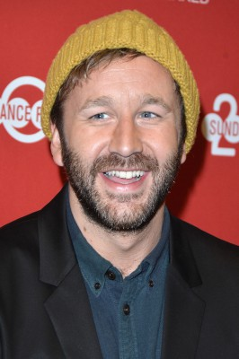
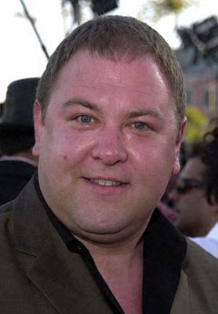
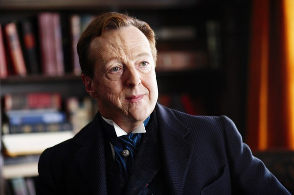

#10944 Mary Poppins' Rückkehr
Alternativ: Mary Poppins Returns (Englischer Titel)
Auszeichnungen: für 4 Oscars nominiert
 
 IMDB-Wertung: 7.0 / 10
IMDB-Wertung: 7.0 / 10  Metascore: 66
Metascore: 66 
London im Jahr 1930: Das Land hat mit einer Wirtschaftskrise zu kämpfen und Michael und Jane Banks sind erwachsen geworden: Jane setzt sich für Frauenrechte ein und Michael arbeitet in der Bank, in der schon sein Vater angestellt war, und lebt mit seinen drei Kindern Annabel, Georgie und John sowie der Haushälterin Ellen nach wie vor in der Cherry Tree Lane Nr. 17. Doch als Michaels Frau stirbt, bekommen er, Jane und die Kinder prompt Hilfe vom geheimnisvollen Kindermädchen Mary Poppins. Sie hat ihre magischen Tricks nicht verlernt und außerdem eine Reihe ziemlich skurriler Freunde dabei, darunter der optimistische Laternenanzünder Jack und Marys exzentrische Cousine Topsy. Gemeinsam bringen sie Spaß und Wunder zurück ins Leben der Familie Banks…
Jahr: 2018
Dauer: 130 Minuten
FSK: 0
Land: USA Studio: Walt Disney Studios Motion PicturesTonspuren: DD5.1 - ,
Untertitel: Deutsch,
Auflösung: 1080p (1920x808) Größe: 6389 MB
Genre: Komödie, Fantasy, Familie, Musical
Regisseur:  Rob Marshall
Rob Marshall
Drehbuch: David Magee, David Magee, Rob Marshall, John DeLuca, P.L. Travers
Soundtrack: Marc Shaiman
Darsteller:
-  Emily Blunt als Mary Poppins
- Lin-Manuel Miranda als Jack
- Ben Whishaw als Michael Banks
-  Emily Mortimer als Jane Banks
- Pixie Davies als Annabel
- Nathanael Saleh als John
- Joel Dawson als Georgie
-  Julie Walters als Ellen
 Meryl Streep als Cousin Topsy
Meryl Streep als Cousin Topsy Colin Firth als Wilkins / Wolf
Colin Firth als Wilkins / Wolf- Jeremy Swift als Gooding / Badger
-  Kobna Holdbrook-Smith als Frye / Weasel
-  Dick Van Dyke als Mr. Dawes, Jr.
 Angela Lansbury als Balloon Lady
Angela Lansbury als Balloon Lady- David Warner als Admiral Boom
- Jim Norton als Binnacle
- Noma Dumezweni als Miss Penny Farthing
- Tarik Frimpong als Angus
- Steve Nicolson als Park Keeper
- Christian Dixon als Milkman
- John Dagleish als Courier
- Karen Dotrice als Elegant Woman
- Ian Conningham als Pub Landlord
- Billy Barratt als Street Urchin
-  Chris O'Dowd als Shamus the Coachman
-  Mark Addy als Clyde the Horse
-  Edward Hibbert als Parrot Umbrella
- Jon-Scott Clark als Leerie
- Leon Cooke als Leerie
- Christopher Scott als Leerie
- Craig Stein als Leerie
- Alex Sturman als Leerie
- Tara Nicole Hughes als Female Dancer
- Jonathan Andrew Hume als Animation Reference Performer - Weasel
- Maria Alexandrova als Crowd Member (uncredited)
- Raj Awasti als Bank Customer (uncredited)
- Jeremy Azis als Bank Customer 110 (uncredited)
- Kiera Bell als Spring Fair Lady (uncredited)
- Colin Blyth als Store Holder (uncredited)
- Steve Carroll als Tramp (uncredited)
- Calvin Chen als Leerie (uncredited)
- Bern Collaço als Bank Teller (uncredited)
- Antonio Raul Corbo als Boy (uncredited)
- Tom Dab als Trader at Topsey's (uncredited)
- David Gambier als Fair Ground Attendee (uncredited)
- Ruth Horrocks als Passerby at Bank (uncredited)
- Nina Kumar als Bank Customer (uncredited)
- Katarina Martin als Spring Fair Lady (uncredited)
- Rico Pass als Boy - Spring Fair Scene (uncredited)
- Jag Patel als Corporate Internal Bank Customer (uncredited)
Datei: X:\2-Dilogie(G-M)\Mary Poppins\Mary Poppins' Rückkehr (2018, FSK0, 1920x808).mkv seit 08.04.2019
Festplatte: HD Collection-2(A-Z)-3(A-M)
 Alle Filme aus Gruppe '2-Dilogie(G-M)\Mary Poppins'
Alle Filme aus Gruppe '2-Dilogie(G-M)\Mary Poppins'